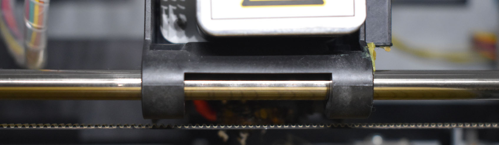

What Is 3D Printing?
So what is 3D printing ?
3D printing or additive manufacturing is a process of making three dimensional solid objects from a digital file.
The creation of a 3D printed object is achieved using additive processes. In an additive process an object is created by laying down successive layers of material until the object is created. Each of these layers can be seen as a thinly sliced horizontal cross-section of the eventual object.
3D printing is the opposite of subtractive manufacturing which is cutting out / hollowing out a piece of metal or plastic with for instance a milling machine.
3D printing enables you to produce complex (functional) shapes using less material than traditional manufacturing methods.